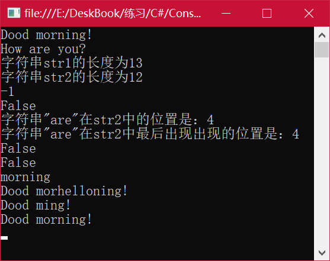

String类的几个方法的应用示例：
using System;
using System.Collections.Generic;
using System.Linq;
using System.Text;
using System.Threading.Tasks;
namespace ConsoleApplication1
{
class Program
{
static void Main(string[] args)
{
string str1 = "Dood morning!";
string str2 = "How are you?";
//输出两个字符串
Console.WriteLine(str1);
Console.WriteLine(str2);
//输出两个字符串的长度
Console.WriteLine("字符串str1的长度为{0}", str1.Length);
Console.WriteLine("字符串str2的长度为{0}", str2.Length);
//比较字符串的长度
Console.WriteLine(str1.CompareTo(str2));
//判断字符串是否相等
Console.WriteLine(str1.Equals(str2));
//输出和给定字符串在原字符串中的位置
Console.WriteLine("字符串\"are\"在str2中的位置是：{0}", str2.IndexOf("are"));
//输出和给定字符串在原字符串中最后出现的位置
Console.WriteLine("字符串\"are\"在str2中最后出现出现的位置是：{0}", str2.LastIndexOf("are"));
//判断字符串是否以给定字符串开始
Console.WriteLine(str1.StartsWith("Good"));
//判断字符串是否以给定字符串结尾
Console.WriteLine(str1.EndsWith("morning"));
//提取字符串，从第五位开始，提取七个字符，输出新字符串
Console.WriteLine(str1.Substring(5, 7));
//在原字符串中从第八位开始，插入给定字符串
Console.WriteLine(str1.Insert(8, "hello"));
//从原字符串的第六位开始，删除三个字符
Console.WriteLine(str1.Remove(6, 3));
//去掉字符串前后的空格
Console.WriteLine(str1.Trim());
Console.ReadLine();
}
}
}
运行结果如下：
